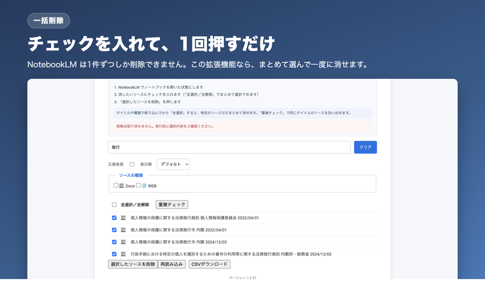
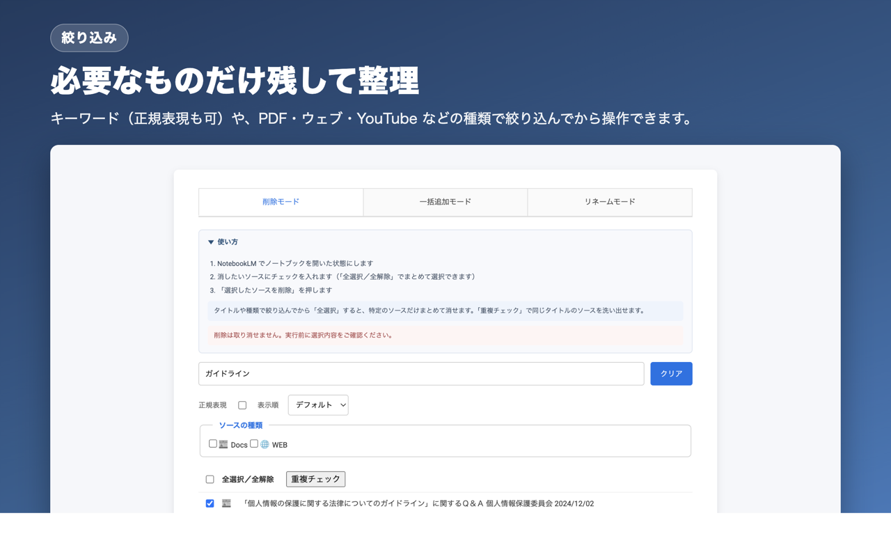

基本の流れ
- NotebookLM でノートブックを開く一覧画面ではなく、ノートブックを1つ開いた状態にします。
- ツールバーの拡張機能アイコンをクリック別ウィンドウでソースの一覧が開きます。
- 操作する上部のタブで「削除モード」「一括追加モード」「リネームモード」を切り替えます。
拡張機能のウィンドウは、アイコンを押したときに開いていたノートブックを対象にし続けます。別のノートブックに切り替えたときは「再読み込み」を押してください。
ソースを一括削除する

- 消したいソースにチェックを入れる「全選択／全解除」でまとめて選択できます。
- 「選択したソースを削除」を押す確認ダイアログが出ます。
- 完了を待つ進捗が表示されます。途中で止めたいときは「削除を中断」を押してください。
削除は取り消せません。 NotebookLM 側に元に戻す機能がないため、実行前に選択内容を必ずご確認ください。心配な場合は、先に「CSVダウンロード」で一覧を控えておくと安心です。
絞り込んでから消す

- タイトルでフィルタ：キーワードを入力すると、一致するソースだけが残ります
- 正規表現：チェックを入れると、入力欄が正規表現として扱われます
- ソースの種類：PDF・ウェブサイト・YouTube・Google ドキュメントなどで絞り込めます
- 表示順：デフォルト／A→Z／Z→A を切り替えられます
絞り込んだ状態で「全選択／全解除」を押すと、表示されているソースだけが選択されます。「先月取り込んだ YouTube だけ消す」といった操作はこの組み合わせで行えます。
重複チェック
「重複チェック」を押すと、同じタイトルのソースだけが表示されます。同じ資料を何度も取り込んでしまったときの整理に使えます。表示された中から、残す1件のチェックを外してから削除してください。
CSVダウンロード
現在表示されているソースの一覧を CSV で書き出します。削除前の控えとしても、リネームモードの貼り付け元としても使えます。
YouTube を一括追加する
「一括追加モード」タブを開きます。
- 共有リンクを1行に1つずつ貼り付ける短縮リンク（youtu.be）や再生リストのパラメータが付いた URL も、自動で正規化されます。
- 「YouTube URL を追加」を押す1件ずつ順番に取り込まれます。本数が多いと時間がかかります。
ウェブサイトの一括追加は NotebookLM 本体でできるようになったため、このモードは YouTube 専用です。
タイトルを一括リネームする
「リネームモード」タブを開きます。
- 「変更前のタイトル,変更後のタイトル」を1行に1組ずつ書くタイトルにカンマが含まれる場合は
"..."で囲みます。 - 「一括リネーム」を押す
変更前のタイトルは完全一致で照合します。削除モードの「CSVダウンロード」で現在のタイトル一覧を書き出し、それを表計算ソフトで加工して貼り付けると確実です。
2024-01-15 会議メモ,【議事録】2024-01 定例
"AI, ML の基礎",AI・ML の基礎速度について
削除は NotebookLM の画面を実際に操作して行うため、件数が多いと時間がかかります。また、NotebookLM のタブが裏に隠れていると Chrome の省電力機能により遅くなります。急ぐ場合は NotebookLM のタブを見える位置に置いたまま実行してください。
よくある質問
削除したソースは元に戻せますか？
戻せません。NotebookLM 側に取り消し機能がないためです。
ノートブック自体は削除されますか？
されません。この拡張機能が操作するのは、開いているノートブック内のソースだけです。
データはどこかに送信されますか？
いいえ。処理はすべてお使いのブラウザ内で完結し、ソースの内容やタイトルを外部に送信することはありません。
途中で止まってしまいました
「削除を中断」を押してから、「再読み込み」で一覧を取り直してください。それでも解消しない場合は、NotebookLM のタブを再読み込みしてからもう一度お試しください。
動かなくなりました
この拡張機能は NotebookLM の画面構造に依存して動作するため、Google 側の変更で一時的に動かなくなることがあります。GitHub の Issues にご報告いただければ対応します。